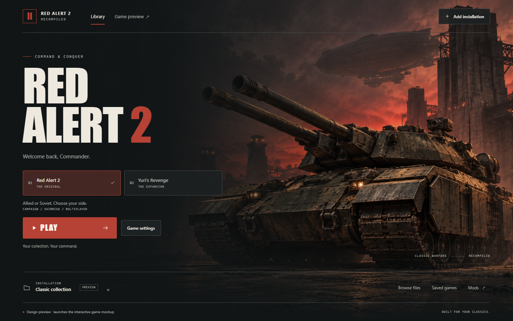

SIX SKILLS · SIX INDEPENDENT TRIALS
Find your next direction.
Compare the visual, interaction, and motion skills against the launcher you chose. Each trial uses the same artwork and working Play → Home flow.

PRESERVED ORIGINAL
The version you chose.
Your cinematic launcher is kept exactly as it was. The trials live in their own folder and use separate preferences.
Explore the six skills
Motion trials are best compared live.